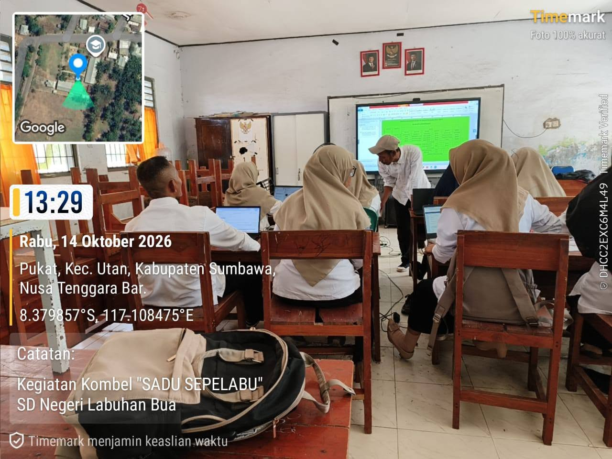
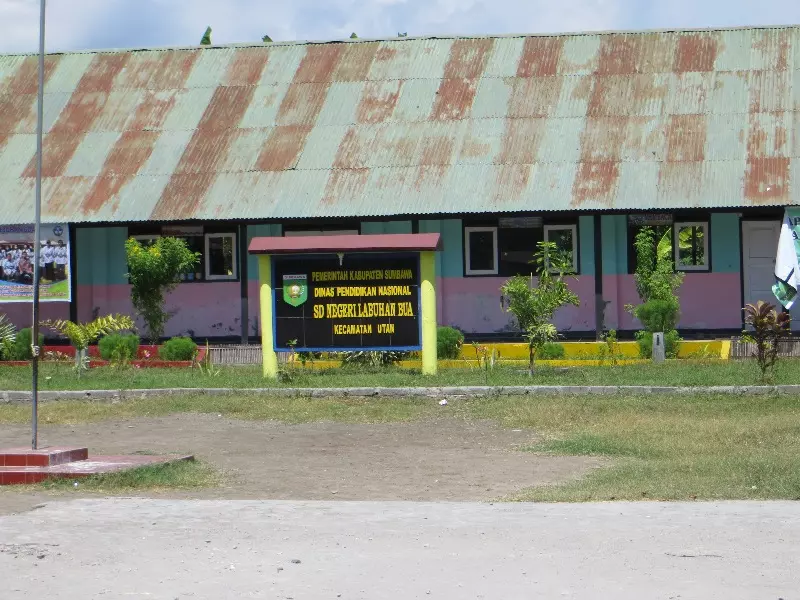
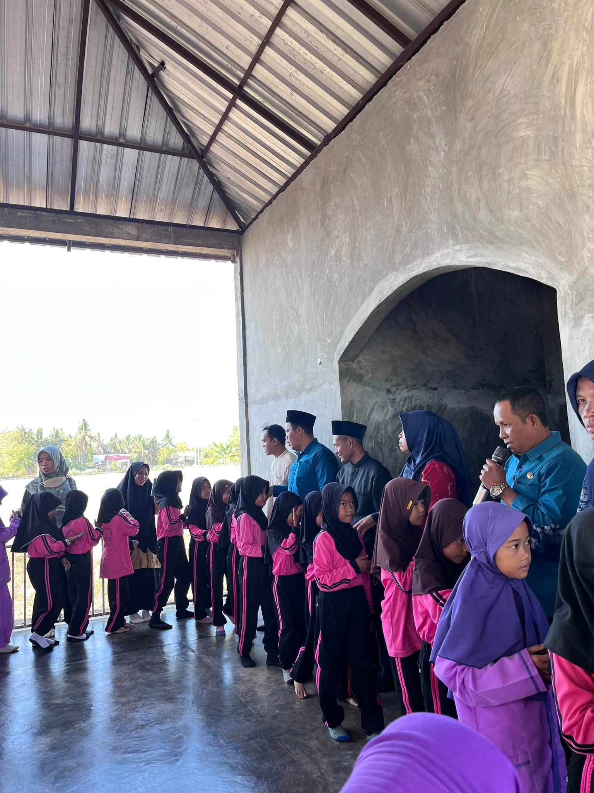
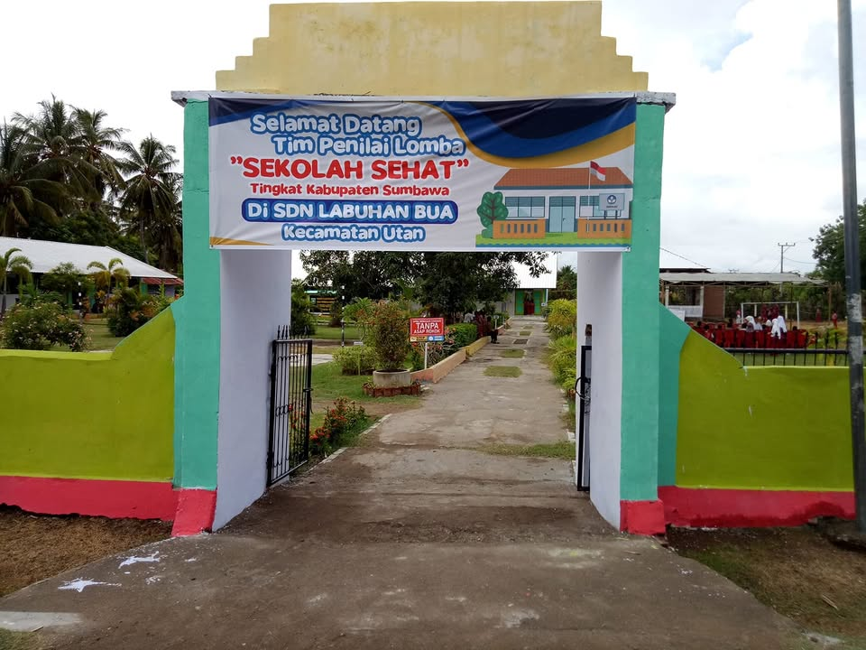

01Pembelajaran aktif
Guru terus belajar bersama agar pengalaman belajar anak semakin bermakna dan dekat dengan kehidupan sehari-hari.
AkademikSekolah pesisir, masa depan besar
Ruang belajar anak-anak Labuhan Bua untuk mengenal dunia, menguatkan karakter, dan melangkah percaya diri menuju masa depan.

Identitas sekolahPesisir · Inspiratif · Sehat
Tentang kami
SD Negeri Labuhan Bua

Berada di Dusun Labuhan Bua, Desa Pukat, sekolah ini menjadi tempat anak-anak bertumbuh melalui pembelajaran, pembiasaan baik, kegiatan keagamaan, kreativitas, serta kebersamaan.
Kami percaya pendidikan dasar yang bermakna lahir dari kerja bersama guru, peserta didik, orang tua, dan masyarakat.
Lihat identitas lengkapPESISIRPeduli · Santun · Inspiratif · Sehat · Inovatif · Religius

Sambutan kepala sekolah
Assalamu’alaikum warahmatullahi wabarakatuh.
Selamat datang di website SD Negeri Labuhan Bua. Website ini hadir sebagai ruang informasi dan komunikasi bagi peserta didik, orang tua, serta masyarakat.
Kami berkomitmen menciptakan lingkungan belajar yang aman, menyenangkan, dan bermakna agar setiap anak dapat tumbuh menjadi pribadi yang berkarakter, mandiri, kreatif, dan berprestasi.
“Setiap anak membawa potensi. Tugas kita adalah menuntun mereka agar berani menemukan dan mengembangkannya.”
Pengalaman belajar
Program ditampilkan berdasarkan kegiatan dan dokumentasi yang tersedia dari SD Negeri Labuhan Bua.

01Guru terus belajar bersama agar pengalaman belajar anak semakin bermakna dan dekat dengan kehidupan sehari-hari.
Akademik
02Menguatkan nilai religius, kedisiplinan, tanggung jawab, kepedulian, dan kebersamaan.
Karakter
Memberi ruang untuk berkarya, tampil percaya diri, dan mengenal kekayaan budaya Indonesia.
Ekspresi
04Membiasakan lingkungan yang bersih, tertib, aman, dan mendukung tumbuh kembang seluruh warga sekolah.
Kebiasaan baikIdentitas satuan pendidikan
Data identitas merujuk pada profil resmi satuan pendidikan NPSN 50203254.
Buka data resmiDokumentasi sekolah
Galeri kegiatan SD Negeri Labuhan Bua disusun berdasarkan jenis kegiatan agar mudah dijelajahi.
Menampilkan semua foto kegiatan
Dokumentasi ditampilkan untuk informasi kegiatan sekolah. Permintaan koreksi atau penghapusan foto dapat disampaikan melalui tombol Support.
Penerimaan murid baru
Sampaikan data awal calon murid melalui formulir ini. Data akan diteruskan ke email resmi sekolah agar orang tua dapat memperoleh informasi jadwal, wilayah penerimaan, dan kelengkapan berkas.
Pra-pendaftaran ini tidak memakai nomor WhatsApp support, tidak menyimpan data di website, dan belum menjadi bukti penerimaan resmi.
Video sekolah
Pilih kelompok video untuk melihat kegiatan siswa baru, siswa lama, guru, atau kegiatan keagamaan secara terpisah.
Menampilkan semua video kegiatan
Siswa baru belajar menjaga kesehatan dan mengenal nutrisi sebagai bekal belajar.
Senam bersama, makan sehat, asesmen, dan kegiatan siswa baru.
Pagi ceria, edukasi kesehatan, perlindungan diri, dan tata tertib.
Makan bergizi, Indonesia Raya, kesepakatan kelas, dan doa bersama.
Semangat siswa-siswi dalam lomba gerak jalan tepat waktu.
Kebersamaan keluarga besar SD Negeri Labuhan Bua.
Dokumentasi singkat kebersamaan dalam lingkungan sekolah.
Guru berdiskusi dan bertumbuh bersama untuk pembelajaran yang lebih baik.
Aktivitas fisik bersama untuk membangun kebiasaan hidup sehat.
Cuplikan terbaru kegiatan SD Negeri Labuhan Bua.
Sumber & dokumen publik
Tautan berikut membuka sumber eksternal terkait SD Negeri Labuhan Bua. Dokumen tetap menjadi milik penerbit atau pengunggah masing-masing.
Hubungi kami
Gunakan email resmi sekolah untuk informasi sekolah dan pendaftaran. WhatsApp hanya digunakan untuk bantuan terkait website.
Nomor 0895-3154-1524 hanya untuk support website dan tidak digunakan sebagai kontak pendaftaran.